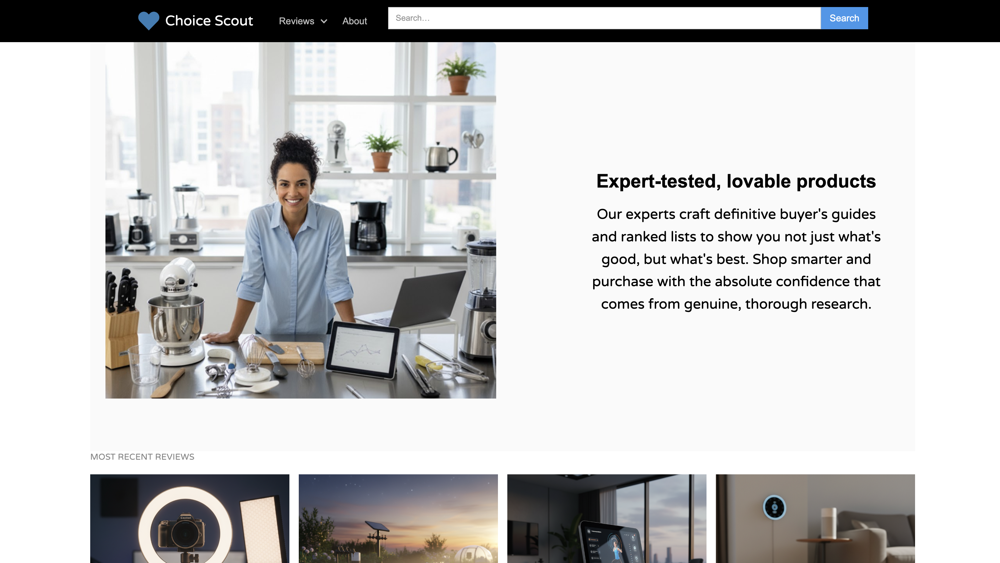

|
Personal Projects What I build outside of work |
|
Choicescout Orchestration: Pipedream · Models: Claude and Gemini · Publishing: Webflow · Monitoring: Discord An AI content system I built and ran. Specialized agents — books, tech, fitness — researched, wrote, and published affiliate product reviews. AI wrote the content; conventional code enforced the rules the AI couldn't be trusted to follow on its own. A Node.js layer handled what the AI couldn't reliably do itself: enforcing output formats, retrying failures, and reporting errors to a Discord channel I monitored. Splitting the work between Claude and Gemini brought the cost per article to roughly $0.50, down from $2.50 using the most capable model alone — the difference that made the economics work. About 95% of traffic came from AI assistants researching products on behalf of their users, not from people arriving through Google — the content was effectively written for other AIs. [ view the archive ]  The Choicescout home page, as it appeared. Full-time RV life 2024 – 2025 My wife and I traveled full time and worked remotely from our RV. It let us see new parts of the country every weekend, save money, and figure out where we might want to settle. We made short videos of the experience to share with family and friends. The work of learning camera equipment and editing software was a fun side project on its own. [ youtube.com/@aubreyandethan ] Building a tiny home on wheels 2020 – 2022 We learned plumbing, electricity, carpentry, mechanics, and more to build an off-grid vacation home. The learning, time, and work involved made it feel like school — so it's on the resume like it was.
ethanjschreiber.com — Austin, TX [ email ] [ linkedin ] Best viewed in Netscape Navigator 4.0 at 800×600. This site is Y2K compliant. Last updated August 9, 2026. |